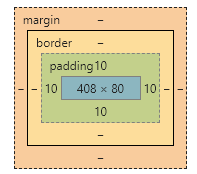
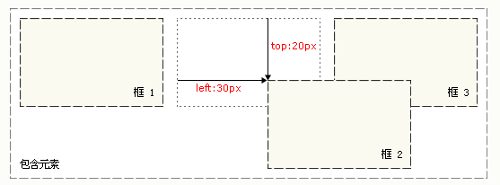
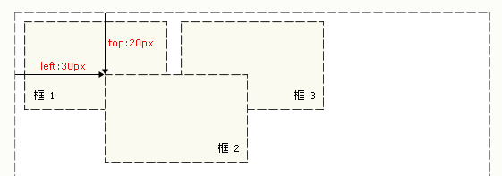
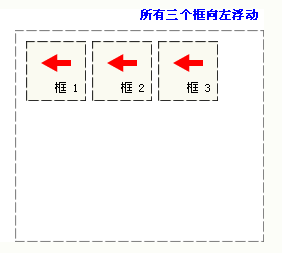
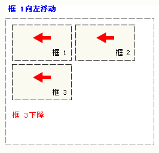

CSS
选择器
元素选择器
1 | html {color:black;} |
类选择器 .
1 | .important {color:red;} |
ID选择器
#intro {font-weight:bold;}
属性选择器 []
1 | a[href] {color:red;} |
后代选择器 空格
1 | h1 em {color:red;} |
子元素选择器 >
1 | h1 > strong {color:red;} |
上面的选择器会选择作为 td 元素子元素的所有 p 元素，这个 td 元素本身从 table 元素继承，该 table 元素有一个包含 company 的 class 属性。
兄弟选择器 +
1 | h1 + p {margin-top:50px;} |
选择紧接在 h1 元素后出现的段落，h1 和 p 元素拥有共同的父元素
1 | html > body table + ul {margin-top:20px;} |
这个选择器解释为：选择紧接在 table 元素后出现的所有兄弟 ul 元素，该 table 元素包含在一个 body 元素中，body 元素本身是 html 元素的子元素。
伪类 :
语法selector : pseudo-class {property: value}
锚伪类
1 | a:link {color: #FF0000} /* 未访问的链接 */ |
伪元素 :
selector.class:pseudo-element {property:value;}
1 | :first-line 伪元素 |
:before 伪元素
1 | :before" 伪元素可以在元素的内容前面插入新内容。 |
样式
背景
background-color 背景色
1
p {background-color: gray;}
background-image 背景图
background:url();
1
body {background-image: url(/i/eg_bg_04.gif);}
css3中支持多重背景：
1
2
3
4body
{
background-image:url(bg_flower.gif),url(bg_flower_2.gif);
}background-repeat 背景重复，与背景图结合使用
1
2
3
4
5body
{
background-image: url(/i/eg_bg_03.gif);
background-repeat: repeat-y;
}background-position 背景定位
1
2
3
4
5
6body
{
background-image:url('/i/eg_bg_03.gif');
background-repeat:no-repeat;
background-position:center;
}属性值包括：center，top，right，bottom，left；百分比；具体数值等。
background-attachment 背景关联
如果文档比较长，那么当文档向下滚动时，背景图像也会随之滚动。当文档滚动到超过图像的位置时，图像就会消失。
background-attachment:fixedbackground-size CSS3中增加背景大小属性
%,px,em,ex等。background-origin属性
值为context-box,padding-box,border-box等
字体
font-family字体系列属性
CSS定义了五种通用字体系列：
Serif字体
Sans-serif字体
Monospace字体
Cursive字体
Fantasy字体
1
body {font-family: sans-serif;}
font-style字体风格
该属性有三个值：
normal - 文本正常显示
italic - 文本斜体显示
oblique - 文本倾斜显示
1
p.normal {font-style:normal;}
font-weight字体加粗属性
100 ~ 900 为字体指定了 9 级加粗度。100 对应最细的字体变形，900 对应最粗的字体变形。数字 400 等价于 normal，而 700 等价于 bold。
1
2p.thick {font-weight:bold;}
p.thicker {font-weight:900;}font-size字体大小属性
1
2
3h1 {font-size:60px;}
h2 {font-size:40px;}
p {font-size:14px;}CSS3 @font-face 规则
通过 CSS3，web 设计师可以使用他们喜欢的任意字体。
当您您找到或购买到希望使用的字体时，可将该字体文件存放到 web 服务器上，它会在需要时被自动下载到用户的计算机上。
您“自己的”的字体是在 CSS3 @font-face 规则中定义的。
1
2
3
4
5
6
7
8
9
10
11
12
13<style>
@font-face
{
font-family: myFirstFont;
src: url('Sansation_Light.ttf'),
url('Sansation_Light.eot'); /* IE9+ */
}
div
{
font-family:myFirstFont;
}
</style>
文本
text-indent首行缩进
p {text-indent: 5em;}text-align水平对齐
left\right\centerword-spacing字间距
p.spread {word-spacing: 30px;}letter-spacing 字母间距
h4 {letter-spacing: 20px}text-transform 字符转换
uppercase
lowercase
capitalize：首字母大写text-decoration字体装饰
underline
overline
line-through
blinkdirection 文本放下
影响块级元素中文本的书写方向、表中列布局的方向、内容水平填充其元素框的方向、以及两端对齐元素中最后一行的位置。text-shadow css3中支持文本阴影：与box-shadow类似
1
2
3
4h1
{
text-shadow: 5px 5px 5px #FF0000;
}word-wrap分词CSS3属性
1
p {word-wrap:break-word;}
链接
针对以下四种状态设置颜色、背景、字体修饰等等
a:link - 普通的、未被访问的链接
a:visited - 用户已访问的链接
a:hover - 鼠标指针位于链接的上方
a:active - 链接被点击的时刻
列表
list-style-type列表类型
square
list-style-image列表图像
1
ul li {list-style-image : url(xxx.gif)}
表格
border
设置表格边框边框
1
2
3
4
5
6
7
8
9table
{
border-collapse:collapse;
}
table,th, td
{
border: 1px solid black;
}如果没有boder-collapse,table的边框与th、td的边框会分离，成为2层
其他属性
表格的宽度与高度属性：width，height;
表格文本对齐属性:text-align
背景颜色
内边距等等1
2
3
4
5
6
7
8
9
10
11
12
13
14
15
16
17
18table
{
width:100%;
}
th
{
height:50px;
background-color:green;
color:white;
}
td
{
text-align:right;
padding:15px;
}轮廓outline
- outline是在border外了一层框
- outline-color
- outline-style
- outline-width
框模型
模型
从内至外：元素element、内边距padding、边框border、外边距margin

padding
可以按照上、右、下、左的顺序分别设置各边的内边距
h1 {padding: 10px 0.25em 2ex 20%;}
等价于1
2
3
4
5
6h1 {
padding-top: 10px;
padding-right: 0.25em;
padding-bottom: 2ex;
padding-left: 20%;
}border
border有3个属性：类型style，颜色color，宽度width
每一种属性都可以从top\right\bottom\left的角度来设置。p {border:solid red 1px}border-radius
css3中新增属性，用于圆角矩形
border-radius:25px;box-shadow
增加边框的阴影效果box-shadow: 10px 10px 5px #888888;
边框的相对位置，虚化，颜色margin
与padding类似h1 {margin : 10px 0px 15px 5px;}
定位
display
div、h1 或 p 元素常常被称为块级元素。这意味着这些元素显示为一块内容，即“块框”。与之相反，span 和 strong 等元素称为“行内元素”，这是因为它们的内容显示在行中，即“行内框”。
您可以使用 display 属性改变生成的框的类型。这意味着，通过将 display 属性设置为 block，可以让行内元素（比如 <a> 元素）表现得像块级元素一样。还可以通过把 display 设置为 none，让生成的元素根本没有框。这样的话，该框及其所有内容就不再显示，不占用文档中的空间。
position
相对定位：移动后原位置保留
1
2
3
4
5#box_relative {
position: relative;
left: 30px;
top: 20px;
}
在使用相对定位时，无论是否进行移动，元素仍然占据原来的空间。因此，移动元素会导致它覆盖其它框
绝对定位：移动后原位置不保留
1
2
3
4
5#box_relative {
position: absolute;
left: 30px;
top: 20px;
}
相对定位是“相对于”元素在文档中的初始位置,而绝对定位是“相对于”最近的已定位祖先元素，如果不存在已定位的祖先元素，那么“相对于”最初的包含块。
float
简介
浮动的框可以向左或向右移动，直到它的外边缘碰到包含框或另一个浮动框的边框为止。由于浮动框不在文档的普通流中，所以文档的普通流中的块框表现得就像浮动框不存在一样。
浮动
1
2
3
4
5
6
7
8
9
10.news img {
float: left;
}
.news p {
float: right;
}
.clear {
clear: both;
}三个框都向左移动，那么框 1 向左浮动直到碰到包含框，另外两个框向左浮动直到碰到前一个浮动框。

如果包含框太窄，无法容纳水平排列的三个浮动元素，那么其它浮动块向下移动，直到有足够的空间

其他
排版
对齐
如何水平对齐块级元素
块级元素指的是占据占据全部可用宽度的元素，并在其前后都会换行。<h1><p><div>使用margin来水平对齐
可通过将左和右外边距设置为 “auto”，来对齐块元素。1
2
3
4
5
6.center
{
margin:auto;
width:70%;
background-color:#b0e0e6;
}使用position来进行左右对齐
元素的外边距和内边距进行预定义是一个好主意。这样可以避免在不同的浏览器中出现可见的差异。
当像这样对齐元素时，对1
2
3
4
5
6
7
8
9
10
11
12
13body
{
margin:0;
padding:0;
}
.right
{
position:absolute;
right:0px;
width:300px;
background-color:#b0e0e6;
}使用float属性来对齐
1
2
3
4
5
6.right
{
float:right;
width:300px;
background-color:#b0e0e6;
}
尺寸
height:元素的高度
width：元素的宽度
line-height:行高
max-height:最大高度
- min-height
- max-width：最大宽度
- min-width
图片浮动
1 | div |
1 | <div> |
首字母
1 | span |
无表格首页
1 | <style type="text/css"> |
图片库
图片库
1 | <style> |
1 | <div class="img"> |
div的类为class包括链接与desc说明，其中链接是以图片为链接src的。
最值得注意的是，将a中的img设置为inline，而不是a
图片透明度
1 | IMG :HOVER |
透明框中的文本
1 | <style> |
1 | <div class="background"> |
对backgroud设置背景图片与大小，然后在其中设置文本框，包括边距、透明度、背景颜色为白色很重要。透明度也是在白色背景基础上完成的。
导航栏
导航栏 = 链接列表
水平菜单
1 | ul |
1 | <ul> |
垂直菜单
1 | <style> |
水平菜单
1 | <style> |
CSS3
2D转换transform
translate()移动
1
2
3
4
5
6
7
8div
{
transform: translate(50px,100px);
-ms-transform: translate(50px,100px); /* IE 9 */
-webkit-transform: translate(50px,100px); /* Safari and Chrome */
-o-transform: translate(50px,100px); /* Opera */
-moz-transform: translate(50px,100px); /* Firefox */
}rotate()旋转
1
2
3
4
5
6
7
8div
{
transform: rotate(30deg);
-ms-transform: rotate(30deg); /* IE 9 */
-webkit-transform: rotate(30deg); /* Safari and Chrome */
-o-transform: rotate(30deg); /* Opera */
-moz-transform: rotate(30deg); /* Firefox */
}
scale()拉伸
1
2
3
4
5
6
7
8div
{
transform: scale(2,4);
-ms-transform: scale(2,4); /* IE 9 */
-webkit-transform: scale(2,4); /* Safari 和 Chrome */
-o-transform: scale(2,4); /* Opera */
-moz-transform: scale(2,4); /* Firefox */
}skew()倾斜
1
2
3
4
5
6
7
8div
{
transform: skew(30deg,20deg);
-ms-transform: skew(30deg,20deg); /* IE 9 */
-webkit-transform: skew(30deg,20deg); /* Safari and Chrome */
-o-transform: skew(30deg,20deg); /* Opera */
-moz-transform: skew(30deg,20deg); /* Firefox */
}matrix():
需要六个参数，包含数学函数，允许您：旋转、缩放、移动以及倾斜元素。
3D转换
就是2D转换后加X、Y、Z、3D等表示在那个轴进行
如translate3d(x,y,z),translateX(x),translateY(y),translateZ(z)
过渡
CSS3 过渡是元素从一种样式逐渐改变为另一种的效果。
要实现这一点，必须规定两项内容：
规定您希望把效果添加到哪个 CSS 属性上
规定效果的时长
长度
1 | <style> |
转换
1 | <style> |
动画@keyframes及animation
如需在 CSS3 中创建动画，您需要学习 @keyframes 规则。
@keyframes 规则用于创建动画。在 @keyframes 中规定某项 CSS 样式，就能创建由当前样式逐渐改为新样式的动画效果。
先用@keyframes创建动画，然后用animation绑定到div元素上。动画其实是上述过渡的更进一步。需要对各个浏览器进行匹配。
背景色
1 | <style> |
其他属性
1 | div |
多列
简介
通过 CSS3，您能够创建多个列来对文本进行布局 - 就像报纸那样！
多列属性：
column-count
column-gap
column-rule
实例
1 | <style> |